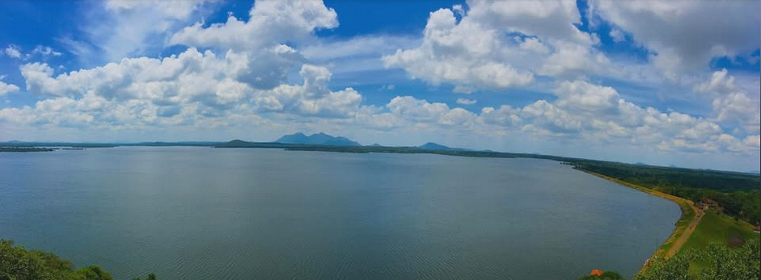
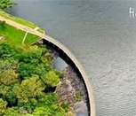
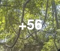

01 / NATURE
වැව් හා ස්වභාවික දසුන්
නිස්කලංක ජල තලය සහ විහිදුණු අහස.
වැව්, හරිත පරිසරය, සංස්කෘතිය සහ ගැමි ජීවිතයේ සුන්දරත්වය සොයා යන්න. අපේ ප්රදේශය ඔබට හඳුන්වා දෙන්නේ “ගලෙන්බිඳුණුවැව අපි” සමඟින්.
“ගලෙන්බිඳුණුවැව අපි” Facebook පිටුවේ අරමුණ අපේ ප්රදේශයේ ලස්සන තැන්, දර්ශන සහ දේශීය වටිනාකම් වැඩි පිරිසකට හඳුන්වා දීමයි. මෙම වෙබ් අඩවිය ඒ දසුන් සහ තොරතුරු සංචාරකයන්ට පහසුවෙන් සොයාගැනීමට උපකාරී වන මාර්ගෝපදේශයක් ලෙස සැලසුම් කර ඇත.
අපේ පිටුවේ පළ කළ දසුන් ඇසුරින්

නිස්කලංක ජල තලය සහ විහිදුණු අහස.
ප්රදේශයේ උරුමය සහ වටිනාකම් සොයා බලන්න.
ඡායාරූපවලින් අපේ පරිසරයේ සුන්දරත්වය.
සටහන: මෙම කොටස් Facebook පිටුවේ screenshot එකේ පෙනෙන ඡායාරූප පදනම් කරගෙන සකස් කර ඇත. නිශ්චිත ස්ථාන නම් සහ ගමන් විස්තර තහවුරු කළ පසු එක් කළ යුතුය.


මෙහි භාවිතා කර ඇත්තේ ඔයා එවූ Facebook screenshots වලින් crop කළ ඡායාරූප පමණි. ඒවා screenshot ප්රමාණයට සීමා වන නිසා, මුල් post එකේ original photos ලැබුණොත් වඩා පැහැදිලිව යාවත්කාලීන කළ හැක.
අලුත් ඡායාරූප සහ ප්රදේශයේ තොරතුරු සඳහා අපේ Facebook පිටුව අනුගමනය කරන්න.